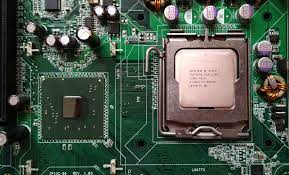
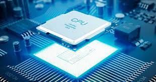
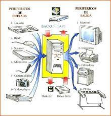
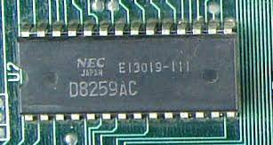
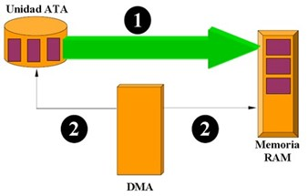
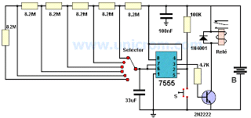
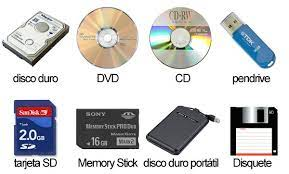
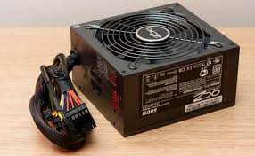
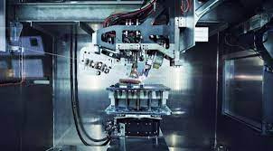

3.1 Chipset.
Un chipset (traducido como circuito integrado auxiliar) es el conjunto de circuitos integrados diseñados con base en la arquitectura de un procesador (en algunos casos, diseñados como parte integral de esa arquitectura), permitiendo que ese tipo de procesadores funcionen en una placa base. Sirven de puente de comunicación con el resto de componentes de la placa, como son la memoria, las tarjetas de expansión, los puertos USB, ratón, teclado, etc.

3.1.1 Unidad Central de Procesamiento (CPU).
La unidad central de procesamiento o CPU (por el acrónimo en inglés de central processing unit), o simplemente el procesador o microprocesador, es el componente del computador y otros dispositivos programables, que interpreta las instrucciones contenidas en los programas y procesa los datos. Los CPU proporcionan la característica fundamental de la computadora digital (la programabilidad) y son uno de los componentes necesarios encontrados en las computadoras de cualquier tiempo, junto con el almacenamiento primario y los dispositivos de entrada/salida.
conoce como microprocesador el CPU que es manufacturado con circuitos integrados. Desde mediados de los años 1970, los microprocesadores de un solo chip han reemplazado casi totalmente todos los tipos de CPU, y hoy en día, el término "CPU" es aplicado usualmente a todos los microprocesadores.

3.1.2 Controlador del Bus.
El Bus es la vía a través de la que se van a transmitir y recibir todas las comunicaciones, tanto internas como externas, del sistema informático. El bus es solamente un Dispositivo de Transferencia de Información entre los componentes conectados a él, no almacena
información alguna en ningún momento. Los datos, en forma de señal eléctrica, sólo permanecen en el bus el tiempo que necesitan en recorrer la distancia entre los dos componentes implicados en la transferencia. En una unidad central de Bus de sistema típica el bus se subdivide en tres buses o grupos de líneas: Bus de Control. Bus de Datos. Direcciones.
Bus de Direcciones:
Es un canal de comunicaciones constituido por líneas que apuntan a la dirección de memoria que ocupa o va a ocupar la información a tratar. Una vez direccionada la posición, la información, almacenada en la memoria hasta ese momento, pasará a la CPU a través del bus de datos. Para determinar la cantidad de memoria directamente accesible por la CPU, hay que tener en cuenta el número de líneas que integran el bus de direcciones, ya que cuanto mayor sea el número de líneas, mayor será la cantidad de direcciones y, por tanto, de memoria a manejar por el sistema informático.
Bus de Datos:
El bus de datos es el medio por el que se transmite la instrucción o dato apuntado por el bus de direcciones. Es usado para realizar el intercambio de instrucciones y datos tanto internamente, entre los diferentes componentes del sistema informático, como externamente, entre el sistema informático y los diferentes subsistemas periféricos que se encuentran en el exterior, una de las características principales de una computadora es el número de bits que puede transferir el bus de datos (16, 32, 64, etc.). Cuanto mayor sea este número, mayor será la cantidad de información que se puede manejar
al mismo tiempo.
Bus de Control:
Es un número variable de líneas a través de las que se controlan las unidades complementarías. El número de líneas de control dependerá directamente de la cantidad que pueda soportar el tipo de CPU utilizada y de su capacidad de direccionamiento de información.
3.1.3 Puertas de Entrada Salida E/S
En computación, entrada/salida, también abreviado E/S o I/O (del original en inglés input/output), es la colección de interfaces que usan las distintas unidades funcionales (subsistemas) de un sistema de procesamiento de información para comunicarse unas con otras, o las señales (información) enviadas a través de esas interfaces. Las entradas son las señales recibidas por la unidad, mientras que las salidas son las señales enviadas por ésta. El término puede ser usado para describir una acción; "realizar una entrada/salida" se refiere a ejecutar una operación de entrada o de salida.
Los dispositivos de E/S los usa una persona u otro sistema para comunicarse con una computadora. De hecho, a los teclados y ratones se los considera dispositivos de entrada de una computadora, mientras que los monitores e impresoras son vistos como dispositivos de salida de una computadora. Los dispositivos típicos para la comunicación entre computadoras realizan las dos operaciones, tanto entrada como salida, y entre otros se encuentran los módems y tarjetas de red. Es importante notar que la designación de un dispositivo, sea de entrada o de salida, cambia al cambiar la perspectiva desde el que se lo ve.

3.1.4 Controlador de Interrupciones.
Este circuito integrado controla las interrupciones del sistema. Como el microprocesador sólo posee dos entradas de interrupción, y puede controlar muchas más, es necesario algún integrado que no permita ello. El 8259 cumple este propósito. El funcionamiento del 8259 es muy sencillo: Supongamos que no queda ninguna interrupción pendiente y el CPU está trabajando en el Programa principal . Al activarse una línea de interrupción, el 8259 verifica que no haya otra interrupción pendiente, y si no la hay, envía una señal a través del pin INTR hacia el pin INTR del CPU, adicionalmente, envía a través del bus de datos, el número de interrupción que se ha activado, de tal manera que el CPU ya sabe qué servicio de interrupción va a usar.

3.1.5 Controlador de Acceso Directo a Memoria.(DMA).
El acceso directo a memoria (DMA, del inglés direct memory access) permite a cierto tipo de componentes de una computadora acceder a la memoria del sistema para leer o escribir independientemente de la unidad central de procesamiento (CPU). Muchos sistemas hardware utilizan DMA, incluyendo controladores de unidades de disco, tarjetas gráficas y tarjetas de sonido. DMA es una característica esencial en todos los ordenadores modernos, ya que permite a dispositivos de diferentes velocidades comunicarse sin someter a la CPU a una carga masiva de interrupciones.
Una transferencia DMA consiste principalmente en copiar un bloque de memoria de un dispositivo a otro. En lugar de que la CPU inicie la transferencia, la transferencia se lleva a cabo por el controlador DMA. Un ejemplo típico es mover un bloque de memoria desde una memoria externa a una interna más rápida. Tal operación no ocupa al procesador y, por ende, éste puede efectuar otras tareas. Las transferencias DMA son esenciales para aumentar el rendimiento de aplicaciones que requieran muchos recursos.

3.1.6 Circuitos de temporización.
El temporizador es un circuito que se encuentra en la tarjeta matriz (Mother Borrad) de la PC y que es capaz
de mantener una cuenta de tiempo basada en el reloj de la computadora. Puede usarse para calcular el intervalo entre dos mediciones de tiempo o para generar pausas. Este chip tiene la capacidad de realizar diferentes funciones de conteo. Es útil para medir el tiempo que dura cierto proceso o para mantener actualizadas la hora del día y la fecha si se deja la PC conectada y encendida (en el caso de computadoras anteriores a la AT, pues esta tiene un reloj de batería integrado; a este respaldo de batería se le conoce como CMOS (complementary MOS).

3.1.7 Circuitos de Control.
Un circuito de control es el componente fundamental de los sistemas de control industrial. Se refiere a todos los componentes físicos y funciones de control necesarios para ajustar automáticamente el valor de una variable de proceso medida (PV) para igualar el valor de un punto de ajuste deseado (SP). Incluye el sensor de proceso, la función del controlador y el elemento de control final (FCE) que se requieren para el control automático
3.1.8 Controladores de video.
Los controladores son circuitos de entrada que tienen todas las impresoras. Son los que procesan la información en primer lugar para saber exactamente qué les está llegando y como manipular los datos. Por ejemplo, un controlador de una impresora recoge los datos que proceden del PC y los convierte en datos de imagen que deberán pasar a lo que llamamos video interface de la impresora. Este otro dispositivo, se encarga de recuperar los datos que ha dejado el controlador e inyectarlos hasta el sistema de escritura del periférico. Los datos de imagen indican si un punto es blanco o negro, en caso de una impresora de color de que color será ese punto.
3.2 Aplicaciones.
3.2.1 Entrada/Salida.
Tanto en la E/S programada como la basada en interrupciones, la CPU debe encargarse de la transferencia de datos una vez que sabe que hay datos disponibles en el controlador. Una mejora importante para incrementar la concurrencia entre la CPU
y la E/S consiste en que el controlador del dispositivo se pueda encargar de efectuar la transferencia de datos, liberando de este trabajo a la UCP, e interrumpir a la UCP sólo cuando haya terminado la operación completa de E/S. Esta técnica
se denomina acceso directo a memoria (DMA, Direct Memory Access).
Cuando se utiliza acceso directo a memoria, es el controlador el que se encarga directamente de transferir los datos entre el periférico y la memoria principal, sin requerir intervención alguna por parte del procesador. Esta técnica
funciona de la siguiente manera: cuando el procesador desea que se imprima un bloque de datos, envía una orden al controlador indicándole la siguiente información:
- Tipo de operación: lectura o escritura.
- Periférico involucrado en la operación.
- La dirección de memoria desde la que se va a leer o a la que va a escribir directamente con el controlador de dispositivo (dirección).
- El número de bytes a transferir (contador).
3.2.2 Almacenamiento.
Los dispositivos o unidades de almacenamiento de datos son componentes que leen o escriben datos en medios o soportes de almacenamiento, y juntos conforman la memoria o almacenamiento secundario de la computadora
Una computadora tiene almacenamiento primario o principal (RAM y ROM) y secundario o auxiliar. El almacenamiento secundario no es necesario para que arranque una computadora, como unidades de disco duro externo, entre otros.

3.2.3 Fuentes de Alimentación.
Los requerimientos de una fuente de alimentación (F.A.) son difíciles de entender. Cuanto más rápido sea un ordenador, mas energía necesitará. Cuantos más periféricos queramos tener en el PC, más potente tendrá que ser nuestra F.A.
La fuente de alimentación de un PC está localizada en una caja herméticamente cerrada y que contiene un conversor hardware de corriente alterna a corriente continua, AC a DC. La entrada normalmente será de 220 V y la salida de 5 a
12 voltios.
Las fuentes de alimentación se encargan de proveer electricidad a los componentes electrónicos del ordenador. Este hardware es esencial ya que sin él, sería imposible que el PC pudiera ni tan siquiera arrancar, por lo que se le considera
crítico cuando tiene una avería o algún problema.
Como se ha dicho, se encuentra dentro de una caja sólida y sellada y usualmente incluye un ventilador para mantener una temperatura ideal.
Se puede encontrar en una esquina de la caja y se puede visualizar desde la parte trasera por la abertura del ventilador para tal uso.
Podemos encontrar dos tipos de fuente de alimentación: AT o ATX. Las fuentes AT son algo más antiguas y menos sofisticadas mientras que las ATX son más modernas y seguras.
Una vez que la fuente de alimentación está debidamente instalada, el ordenador se podrá poner en marcha pulsando un conmutador de encendido/apagado que se encontrará en la parte delantera. Algunos equipos también incluyen un botón para
apagar y encender en la parte trasera.

3.3 Ambientes de Servicio.
El negocio de proveer servicios de datos es mucho más complejo que la forma en la que se dan los tradicionales servicios, que con frecuencia se terminan involucrando o necesitando la colaboración de terceras empresas.
- Desarrollo de nuevos mercados y productos
- Adquisición y administración de clientes
- Proveer y desarrollar servicios para la red
- Administración del negocio
 3.3.1 Negocios.
3.3.1 Negocios.
Definitivamente, la tecnología en general ha sido la causa principal y la acción más directa para la transformación del trabajo de las organizaciones en la posguerra del siglo XX. Tanto los bienes de capital «duros» (computadores, teléfonos, videos,
facsímiles, grabadoras, etc.), como los programas y sistemas de información y comunicación en general, han incrementado enormemente la productividad y eficiencia de las organizaciones. Tenemos como ejemplos los siguientes: bases de datos en
redes de todo orden y topología, sistemas de reservaciones en aerolíneas, sistemas de contabilidad y nóminas, archivos clínicos en centros de salud, sistemas de conmutación electrónica y un sin número de otras aplicaciones a procesos administrativos.
 3.3.2 Industria.
3.3.2 Industria.
La industrialización de los servicios de tecnología de información va a redefinir el mercado en términos de como las organizaciones evalúan, compran y seleccionan los servicios y como los vendedores desarrollan y establecen precios de los servicios. Para
lograr esta estandarización, se requiere un enfoque hacia las soluciones genéricas y esto debe ser responsabilidad de los proveedores, que deben de desarrollar, operar y administrar el resultado de estos genéricos de TI. Aunque los servicios
de TI están en proceso de madurez, la madurez de la industria se ha incrementado en aspectos evidentes, como la forma en que los servicios son implementados y administrados.

3.3.3 Comercio Electrónico.
El desarrollo de estas tecnologías y de las telecomunicaciones ha hecho que los intercambios de datos crezcan a niveles extraordinarios, simplificándose cada vez más y creando nuevas formas de comercio, y en este marco se desarrolla el Comercio Electrónico.
Se considera “Comercio Electrónico” al conjunto de aquellas transacciones comerciales y financieras realizadas a través del procesamiento y la transmisión de información, incluyendo texto, sonido e imagen.